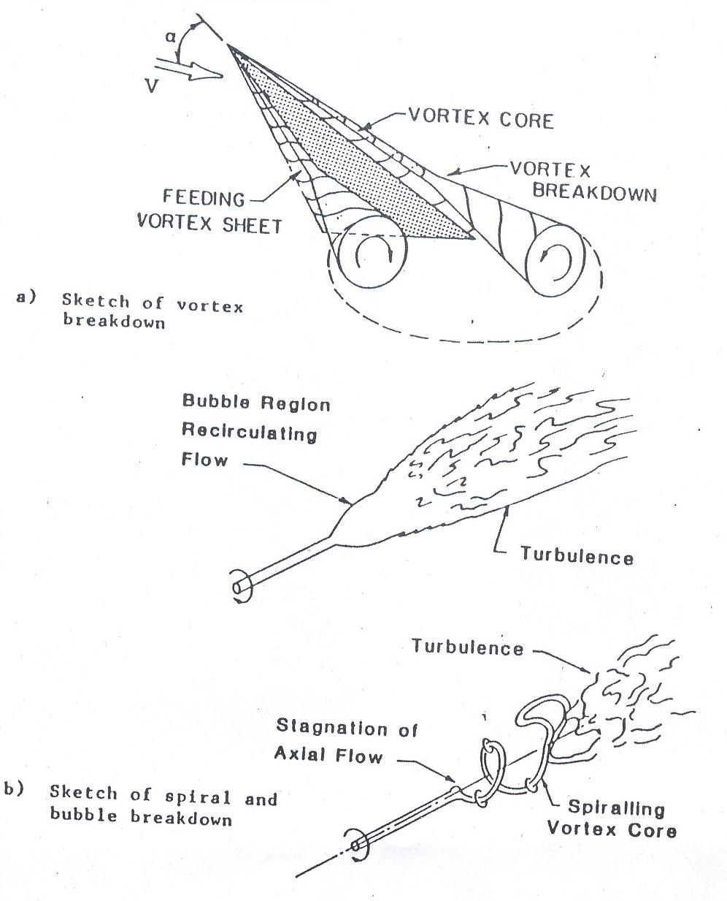

|

|
Flow past a airfoil /wing using flow visualization |
INTRODUCTION:
Modern fighter aircraft and missiles are required to fly at high angles of attack to achieve greater maneuverability and agility.The required aerodynamic performance is achieved greater maneuverability and agility.
The required aerodynamic performance is achieved by using slender highly swept low aspect ratio wings.Among these wing platforms,delta wings and their derivatives are most common.
The dominant leading-edge vortices which originate at the wing at moderate to high angles of attack,is the leading-edge vortices which originate at the wing apex and convect downstream over the wing surface.
These vortices,according to Polhamus,produce large suction on the wing surface and account for the additional lift which can be upto 30% of the total lift generated by delta wing aircraft at moderate at moderate angles of attack.However,beyond a critical angle of attack,a sudden and dramatic structural transformation takes place and tightly
rolled vortices breakdown or burst.Vortex breakdown affects the induced flowfield and causes loss of aerodynamic lift forces,leading to both staic and dynamic stalling of the lifting surfaces.Therefore,vortex breakdown is an important limiting factor on aircraft performance.
Vortex breakdown phenomenon has been the subject of much study,both experimentally and theoretically,for more than two decades.
Serveral different types of vortex breakdown have been observed by Faler and Liebovich in a vortex tube experiment.However,the most common types of breakdown that occur on wings are the bubble and spiral types.The bubble and spiral modes of vortex breakdown are illustrated in Figure1.
The bubble mode of vortex breakdown is characterized by a stagnation point on swirling axis,and followed by a oval-shaped bubble of recirculating flow.The bubble shape is nearly symmetric over most of its length,but the rear is open and asymmetric.
Payne have noticed that the vortex core flow which is jet-like before breakdown becomes wake-like and turbulent after breakdown.The spiral mode of breakdown is characterized by a rapid deceleration of the core flow followed by an abrupt kink at which point the core flow takes the form of spiral that rotates about the vortical axis in the same sense as the fluid in the vortex upstream of the kink.
The spiral exists for a few turns before breaking down into large scale turbulence.It is experimentally shown by Payne that-"these two modes were sen to transform from one to the other apparently at random,with the bubble form seeming to prefer a more upstream loaction relative to spiral mode".

Although many researchers have performed experiments to understand vortex breakdown phenomena,both bubble and spiral types,there is still no general agreement regarding the flow parameters that affect these two types of breakdown and the pohysical process of the breakdown.Therefore,the vortex breakdown mechanism still remains one of the unresolved and the most challenging fundamental research problems in fluid mechanics.
|
|
The onset of vortex breakdown,whether bubble or spiral type,is sensitive to wing leading-edge sweep angle and the angle of attack.The angle of attack at which braekdown occurs,increases withincreasing sweep angle.Figure shows a colllection of low-speed data for breakdown occuring at the trailing-edge.For leading-edge sweep angle greater than about 750,a second boundary occurs,as in Figure,for stable vortex flow due to the proximity of vortex pair.A mutual interaction between the two initially symmetric vortices resultrs in an asymmetric vortex formation similar to that which occurs on the leeside of bodies of revolution at large angles of attack.
This asymmetric vortex formation consists of one vortex located near the wing surface and the other located at some distance from the surface.The flow induced by the vortex near the wing surface creates extra lift similar to that created by the vortex pair at smaller angles of attack.However,the other vortex on the wing separates at some distance from the wing apex and does not induce significant tangential velocities to create extra lift.The net result is a loss of lift and an increase in rolling moment.It has been shown by Ericsson that these asymmetric leading-edge vortices could generate limit-cycle roll oscillation known as "wing rock".He has also shown that the vortex breakdown is the flow mechanism limiting the growth of the wing rock amplitude.
The wing rock phenomena was the first observed by Nguyen in experiments at delta wing with 800sweep angle.
|
|
Vortex breakdown and vortex asymmetry are no doubt a limiting factor on aircraft maneuverability at large angles of attack.It is,therefore,of interest to study these phenomena for better understanding and explore methods and techniques to control them.Recently,few studies have been reported where control concepts,both passive and active,are used effectively for over the delta wing.For example,Miler and Gile used jet blowing to delay vortex breakdown on delta wing during pitching,while Walton and Katz used leading-edge flap have been very limited.
Synolakisexplored various passive control techniques as shown in fig3 by modifying the baseline delta wing models.They have found that the extended winglet-type alteration can increase significantly the angle of the attack for which wing rock occurs.
More recently Poddar has shown that the wing rock can be effectively controlled by using two vortex generators placed in tandem configuration,as shown in fig...,at the root cord of the delta wing model.Flow visualization picture for this configuration and for baseline(without vortex generators)configuration are shown in the same fifure.In addition,to see the effectiveness of the vortex generators in reducing the wing rock,accelerometer signals for the controlled and the baseline cases are comapred in figure5.
The complicated flow phenomena,as described earlier,over delta wings at high angles of attack is inherently unsteady and the three-dimensional in its structure.
Theorectical analysis of such complicated unsteady three-dimensional flow with strong viscous-inviscid interactions are not feasible at present.Therefore,the design of aircraft and the missile configurations must rely on the experimental results from both wind tunnel and flight test.
We,therefore,propose here an extensive study,both visulaization and quantitative,of the complex unsteady three-dimensional vortical flowfield over delta wings.In this study,we will look into the phenoimena such as vortex breakdown and wing rock.
We will also explore the possibility of controlling these phenomena using passive control methods.
The flow visualization study will be performed using the laser sheet technique which is an unique tool for studing the complicated
flow interactions that occur on delta wings or missile configurations.Flow visualization data can be used to obtain vortex trajectory information as well as in determining whether or not a vortex has experienced breakdown or bursting.The details of the flow structure proivided by visualization can be very useful to both experimental lists and theoreticians.
Detailed quantitative measurements,both steady and unsteady,will be made to understand the vortex breakdown and wing rock.In addition,experiments will be performed to control these phenomena.
Finally,flow visualization data along with the other quantitative measurements can provide significant insight into the aerodynamic characterstic of delta wings at large angles of attack.
|
|
|